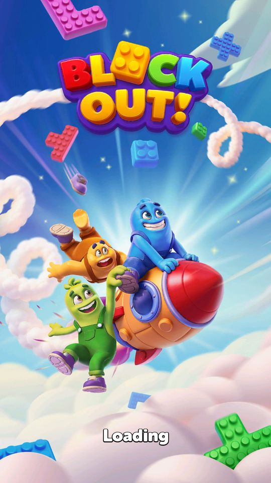

Màn hình chờ
Màn hình chờ lúc khởi động và chuyển cảnh.
Mô tả
- Màn hình chờ lúc khởi động và chuyển cảnh.
- Có bốn thành phần riêng, trong đó hai cái lo trường hợp xấu: mất mạng và cảnh báo tuỳ biến do backend gửi.
Thiết kế chi tiết
Tóm tắt thiết kế
Playtest Khởi động khoảng 20–30 giây trên LDPlayer: logo BLOCK OUT!, ba nhân vật khối cưỡi tên lửa, chữ “Loading.”. Live 28/10 isNoInternetPopupEnable = false: mất mạng chỉ hiện dòng chữ nhỏ, không chặn bằng popup.
Code 4 thành phần: animation (tên lớp còn “Cat” từ tên cũ Cat Block Jam), vòng xoay, chữ mất mạng, cảnh báo tuỳ biến do backend gửi.
Luồng người chơi từng bước
- Mở gameGiao diện Playtest28/10, ngay trước chuỗi popup đầu phiên (Daily Gift…).

Loading 28/10 
Popup đầu tiên sau loading
Bảng tổng hợp mọi tính năng đã làm chi tiết: BlockOut_ThietKeChiTiet.xlsx.
Còn thiếu / chưa xác minh
Mở khóa & điểm vào
Luôn hoạt động.
Điểm vào:
- Khởi động app
- Chuyển cảnh
Cách hoạt động
- LoadingCatAnimationManager chạy animation con mèo (tên gốc của game là Cat Block Jam), LoadingCircleManager quay vòng tròn chờ.
- NoInternetConnectionTextManager hiện thông báo khi mất mạng — nhưng rootLevelConfigModel.isNoInternetPopupEnable = false nên popup mất mạng đang tắt.
- CustomWarningTextManager hiện cảnh báo tuỳ biến do vận hành đặt.
Luồng chi tiết theo code
LoadingCatAnimationManager chạy animation con mèo (tên gốc của game là Cat Block Jam), LoadingCircleManager quay vòng tròn chờ. NoInternetConnectionTextManager hiện thông báo khi mất mạng — nhưng rootLevelConfigModel.isNoInternetPopupEnable = false nên popup mất mạng đang tắt. CustomWarningTextManager hiện cảnh báo tuỳ biến do vận hành đặt.
Ảnh chụp màn hình (1)
1 ảnh chụp trong game (LDPlayer, bản 1006, tài khoản thử level 320 → 350 (07/10/2026)). Bấm ảnh để phóng to; nhãn UC dẫn tới use case tương ứng.


Use case (2)
Bấm vào từng use case để mở. Mở/đóng tất cả
UC-01 Chờ khởi động
Các bước- LoadingCatAnimationManager chạy animation
- LoadingCircleManager quay vòng
- Đăng nhập và nạp cấu hình chạy nền
| Actor | System |
|---|---|
| Trigger | Mở app |
| Điều kiện | - |
| Kết quả | Người chơi có gì để nhìn trong lúc chờ |
| Quy tắc / số liệu | Animation con mèo là dấu vết tên gốc Cat Block Jam |
| Evidence | LoadingCatAnimationManager |
UC-02 Báo mất mạng
Các bước- NoInternetConnectionTextManager hiện chữ
- Popup riêng bị chặn bởi isNoInternetPopupEnable = false
| Actor | System |
|---|---|
| Trigger | Không kết nối được |
| Điều kiện | - |
| Kết quả | Chỉ hiện chữ, không bật popup chặn |
| Quy tắc / số liệu | Server tắt popup mất mạng — chọn hiển thị nhẹ nhàng hơn |
| Evidence | NoInternetConnectionTextManager; rootLevelConfigModel.isNoInternetPopupEnable |
Chưa đọc được / ghi chú
- Nội dung CustomWarningTextManager do backend gửi; chưa bắt được mẫu.
Tính năng liên quan
Giao tiếp với backend và đồng bộ dữ liệu Quản lý và tải asset từ xa
Nguồn đã đọc
- PseudoC/.../Application/Loading/*.c